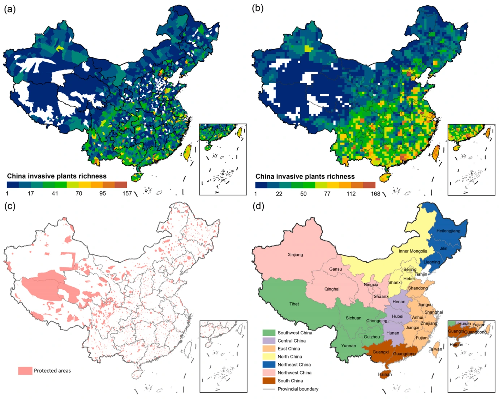
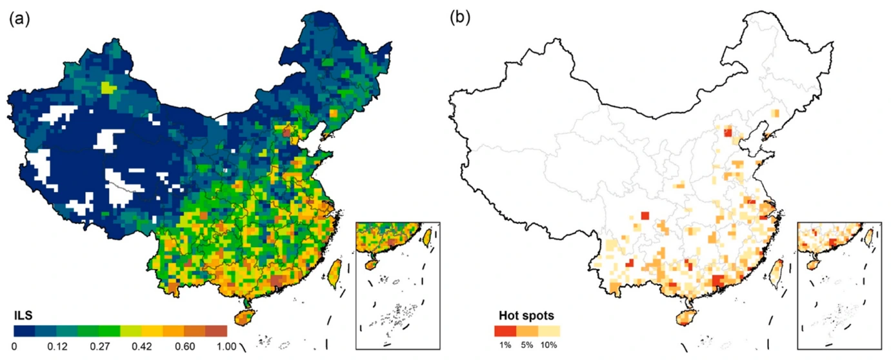
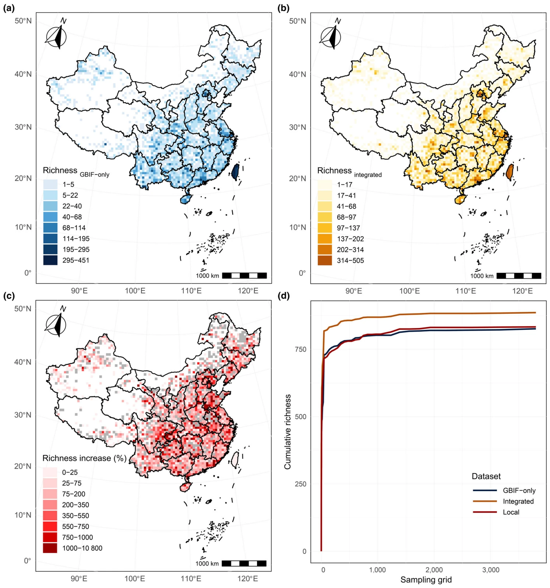
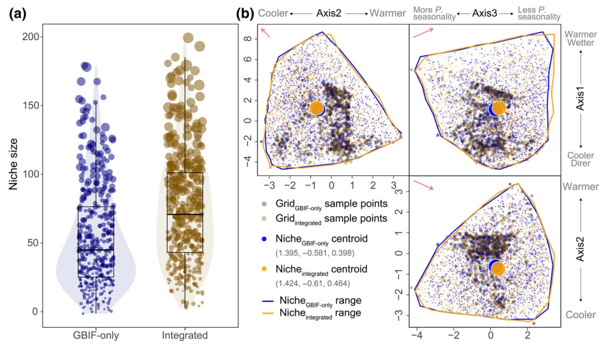
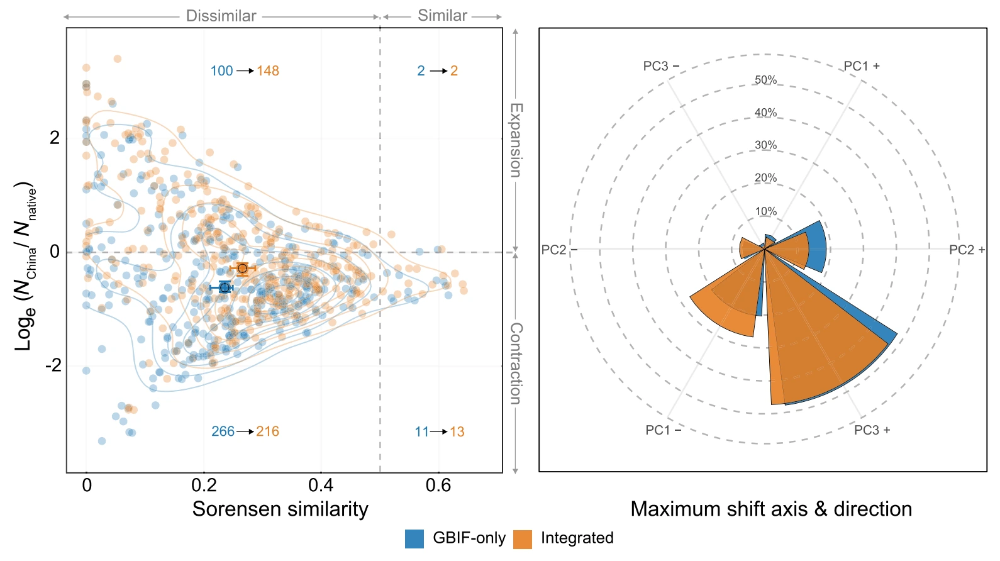
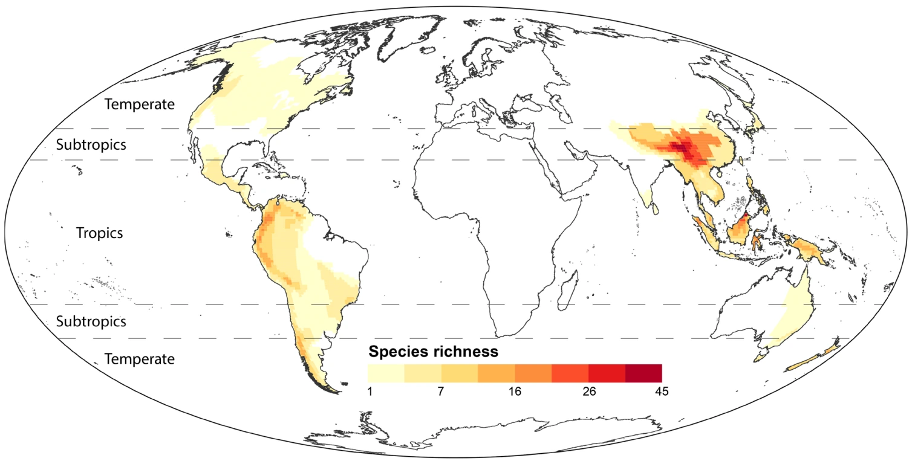
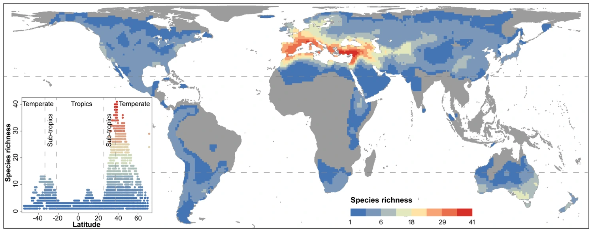
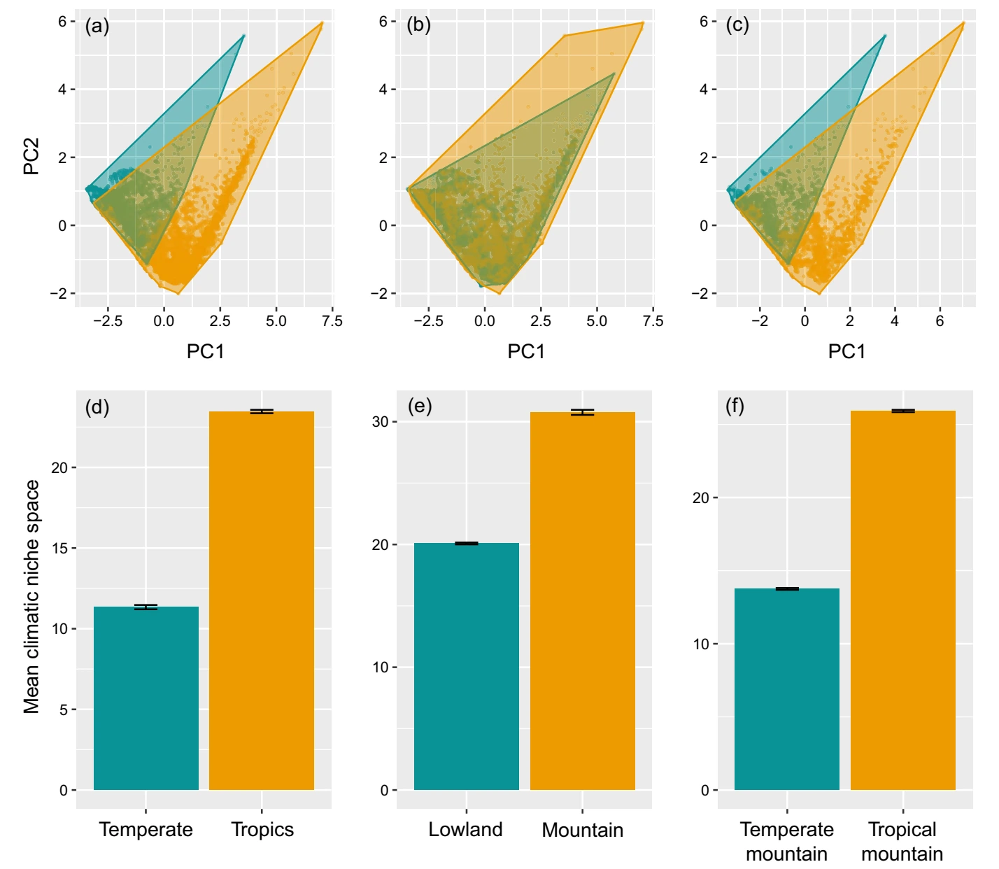
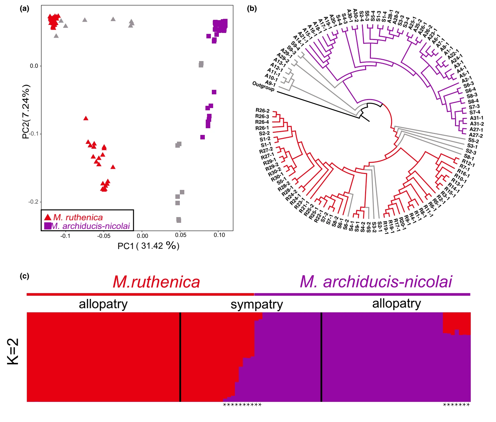
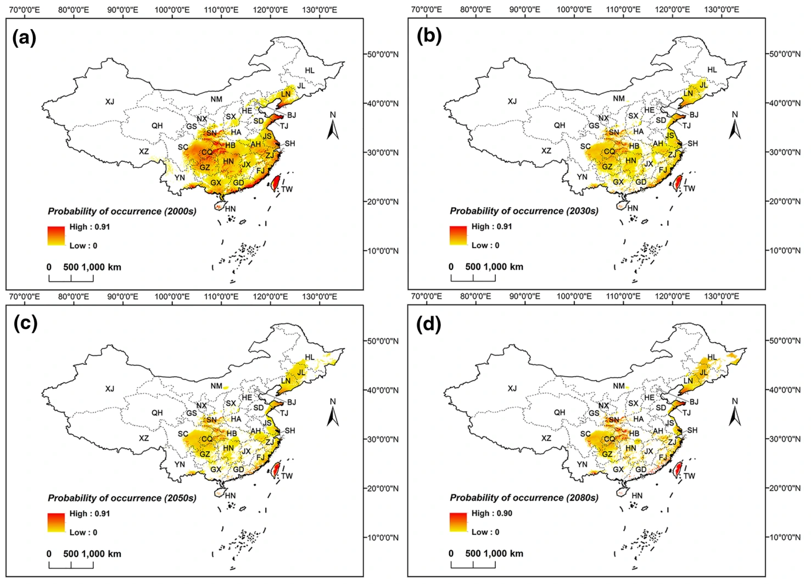

RESEARCH
Patterns, Niches & Biodiversity
I combine biodiversity data, spatial models and ecological theory to understand plant distributions, biological invasions and diversity across regions and scales.
01 / INVASION ECOLOGY & BIODIVERSITY DATA
Where are plant invasions concentrated?
Reliable distribution data are the foundation for understanding and managing biological invasions. I integrate herbarium specimens, citizen science observations, flora, literature and global occurrence records to map alien and invasive plants in China.
Our county-level database documents 400 alien and invasive plant species across 2,684 Chinese counties. Complementary work maps invasion hotspots and compares invasion levels inside and outside protected areas.






02 / CLIMATIC NICHE DYNAMICS
How do plants occupy new climates?
Do naturalized plants retain their native climatic niches, or expand into new environmental space? A central part of my work examines how data completeness changes our answers to this question.
By integrating specimen and citizen science records from China with GBIF data, we found larger climatic niche estimates and more pronounced niche shifts than GBIF-only data suggested. The differences were especially important in southern China and along temperature and seasonality gradients.
These findings motivate my interest in distributional disequilibrium, climatic niche mismatches and more reliable forecasts of plant invasions.




03 / MACROECOLOGY & BIOGEOGRAPHY
Why does plant diversity vary across the world?
I investigate how environmental constraints and evolutionary history interact to shape large-scale diversity gradients.
Our work on Medicago shows that niche conservatism helps explain why a Mediterranean-origin lineage is less diverse in the tropics. In Gaultheria, we found that higher richness in tropical mountains is associated with greater niche diversity, environmental heterogeneity and long-term persistence, rather than significantly faster diversification.






04 / EVOLUTION & DISTRIBUTION MODELLING
From evolutionary history to future distributions
Species distribution models connect ecological patterns with past and future environmental change. In collaborative work on two sister Medicago species, population genomics and distribution models helped reveal divergence with continuing gene flow during Quaternary climatic oscillations.
My earlier work used Maxent models to investigate potential shifts in the suitable range of Galinsoga quadriradiata under future climate scenarios. These complementary approaches inform my broader interests in ecological adaptation, invasion risk and conservation under global change.



